Today we announced plans to acquire @vinylequity, a digital-native transfer agent and shareholder recordkeeping platform. Companies preparing to go public face growing demands for transparency, efficiency and access to liquidity. This acquisition will bring recordkeeping and transfer agency capabilities to Morgan Stanley at Work, so companies can manage equity administration and shareholder services in one place. Together, we'll continue to strengthen our integrated approach to serving companies and their shareholders.
THE BLOCK: Securitize has agreed to acquire River One, an institutional asset-backed financing platform that connects stablecoin capital with traditional lending markets. Financial terms were not disclosed.
The acquisition will add asset-backed lending and warehouse financing capabilities to Securitize's tokenization platform. The deal is expected to close by the end of this year.
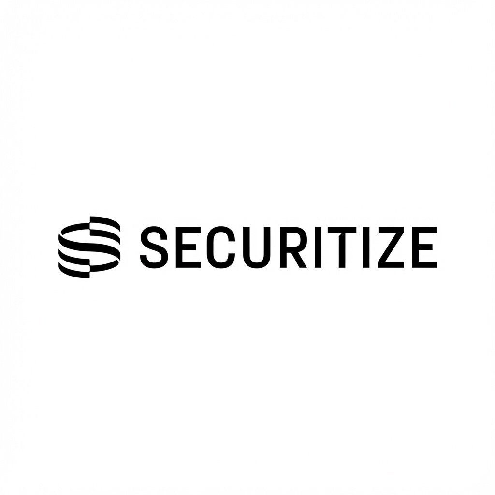
BREAKING: Upcoming NYSE-affiliated tokenized securities platform’s core clearing and settlement layer will be built on top of Avalanche technology.
Avalanche will support the platform’s clearing firm, supporting the development of infrastructure for 24/7 trading, clearing, and settlement.
A landmark step toward the next generation of global financial markets.
BREAKING: Formation Securities (@formation_so) notifies the SEC of its intent to operate the first tokenized securities venue on Solana.
U.S.-listed shares with the same voting and dividend rights as the originals, settling atomically onchain, 24/7.
Euro stablecoins have grown from ~€50M to €450M since early 2024. Against a ~$300B stablecoin market, that’s still a fraction of what’s possible.
Qivalis, a consortium of 37 European banks now authorized by De Nederlandsche Bank, is set to change that. But issuance is only half the story. Each bank still needs the custody, governance, and controls to hold the asset for clients.
BBVA and DZ BANK already run on Ripple Custody to do exactly that: bank-grade infrastructure that integrates with the systems they already run.
When Qivalis launches, will your bank be ready?
Introducing Coinbase National Trust Company, our federally chartered trust company.
OCC approved.
JUST IN: 🇺🇸 Senator Blumenthal gives Binance, Tether and Trump family crypto firms until January 4th to hand over records for investigations.
JUST IN: 🇺🇸 NYSE-affiliated tokenized securities platform to use Avalanche $AVAX for clearing and settlement.
JUST IN: $13 trillion Charles Schwab adds Solana, Avalanche, and Chainlink trading to its crypto accounts.
JUST IN: 🇺🇸 Coinbase officially receives full US federal approval to operate as a national trust bank.
BREAKING: The S&P 500 surges over +100 points as dip buyers rotate back into technology stocks.
US stocks have now added +$1 trillion today.
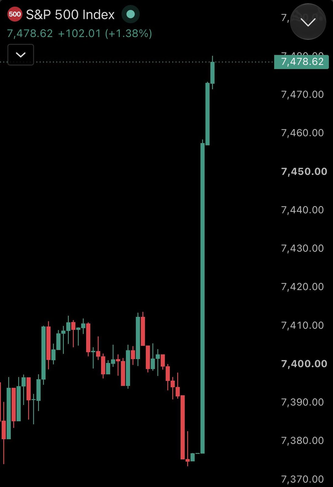
BREAKING: Nvidia stands out as the only major tech stock in the red, plunging -6.75% while the rest of the sector rallies.
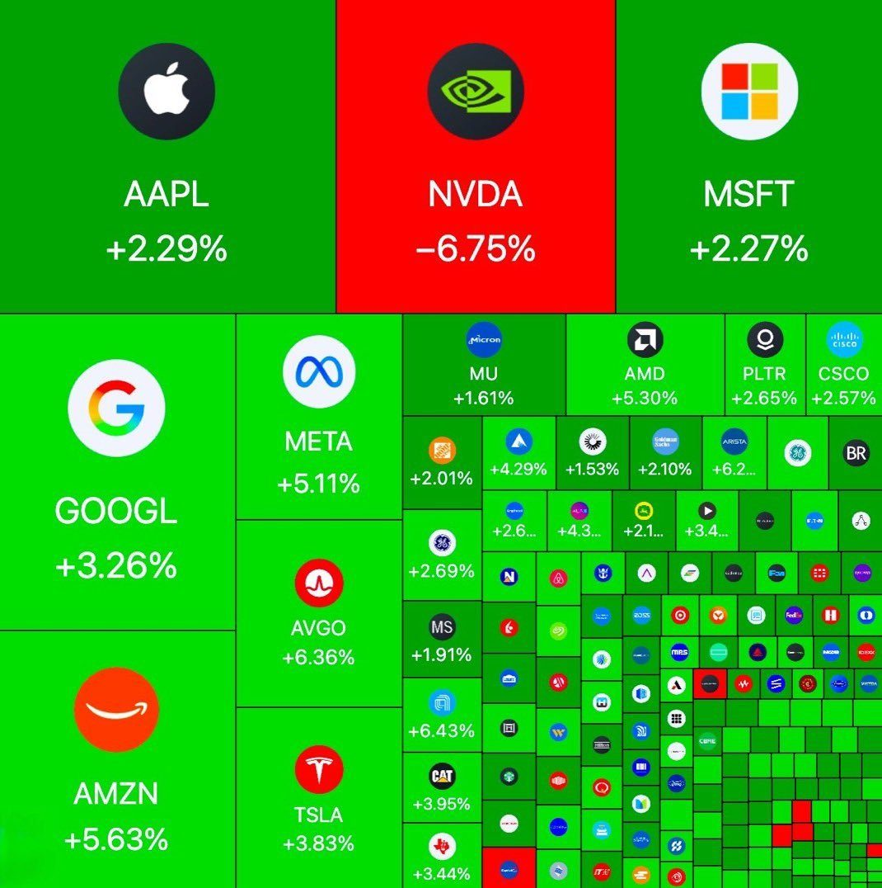
JUST IN: Nvidia $NVDA crashes 6.5% at open after CEO Jensen Huang admits to having an affair with an alleged Chinese spy.
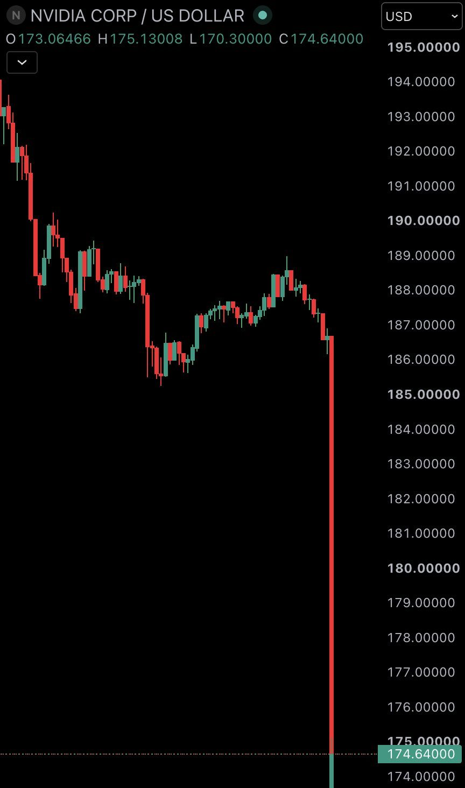
JUST IN: 🇺🇸 $2 trillion added to the US stock market today.
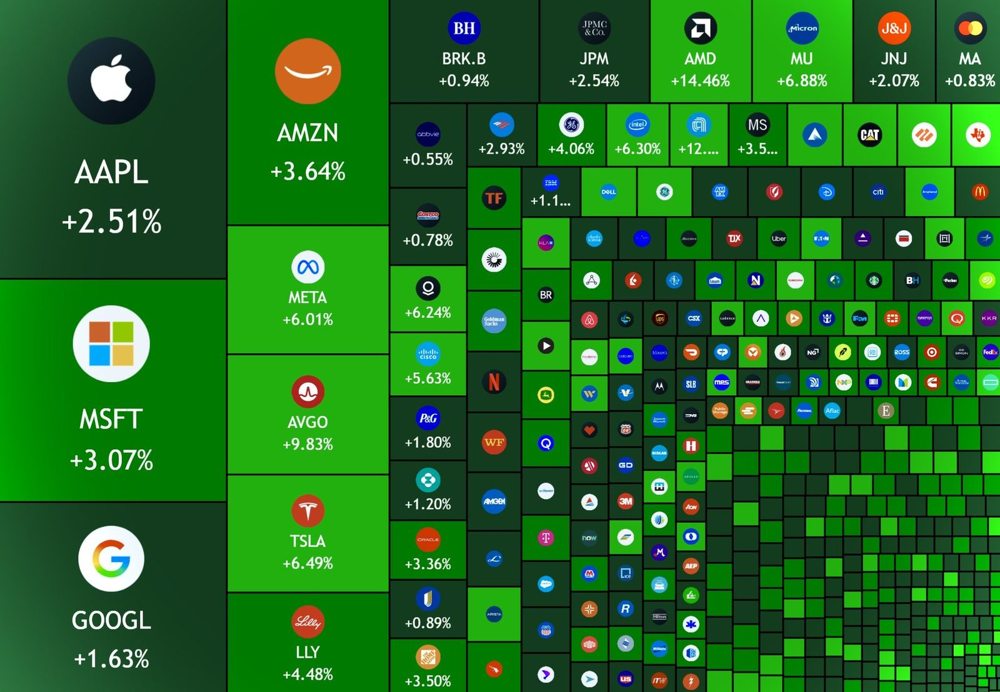
We are currently responding to an active cybersecurity incident that may impact university devices, systems, and cloud-based services. Our Information Technology team is actively investigating and working to contain the situation.
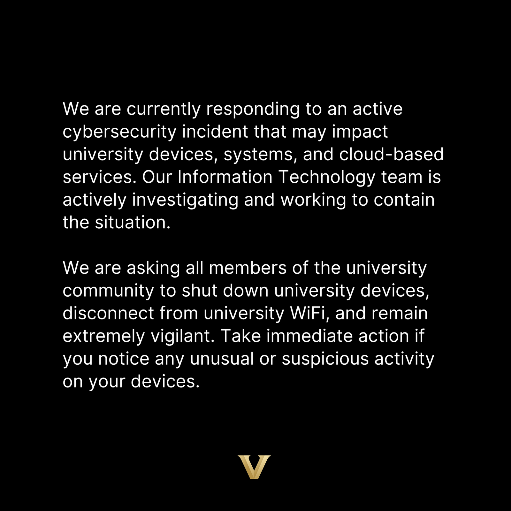
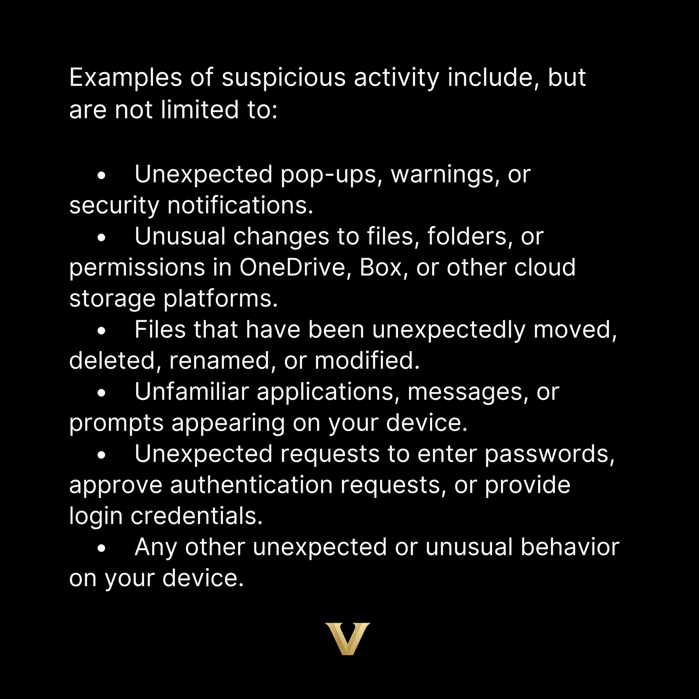
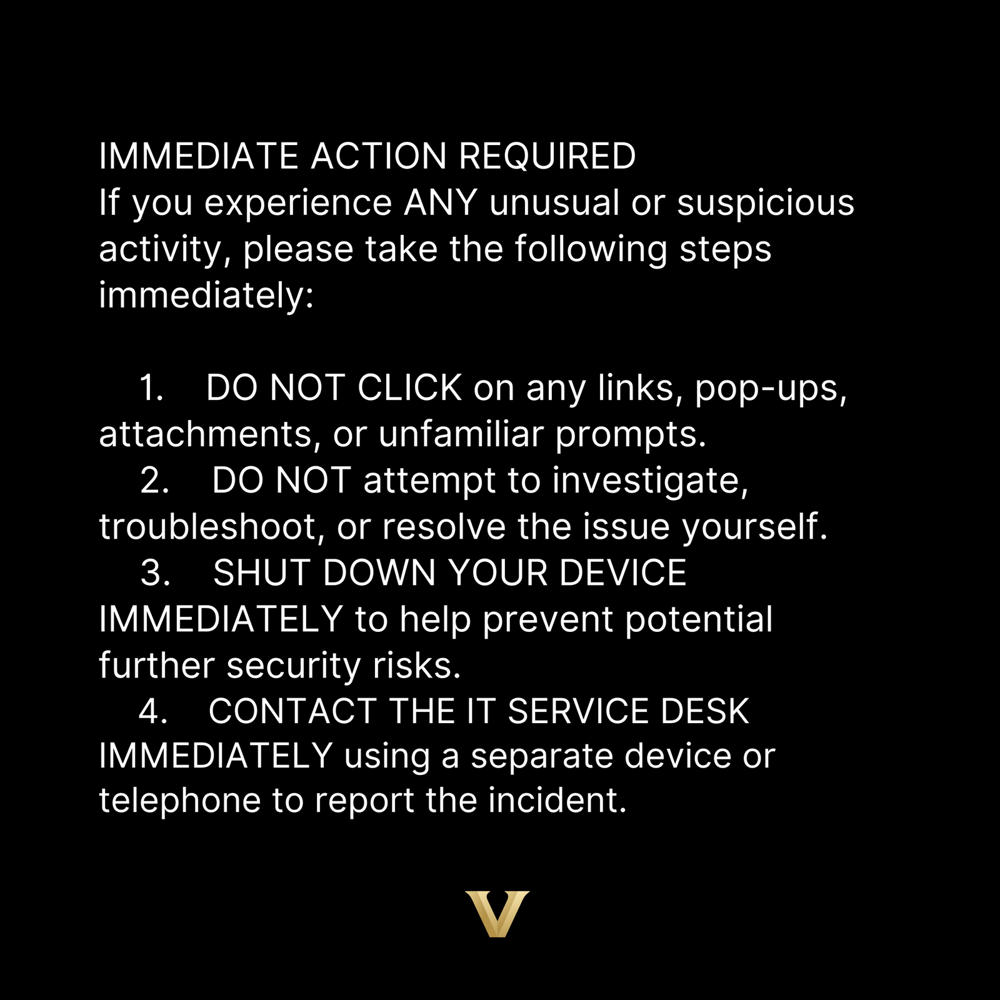
Vanderbilt University currently is alleged to have all of their computer systems locked and over 1,000,000 students and employees have had their personal details stolen by threat group BYOD.
Developing situation @VanderbiltU
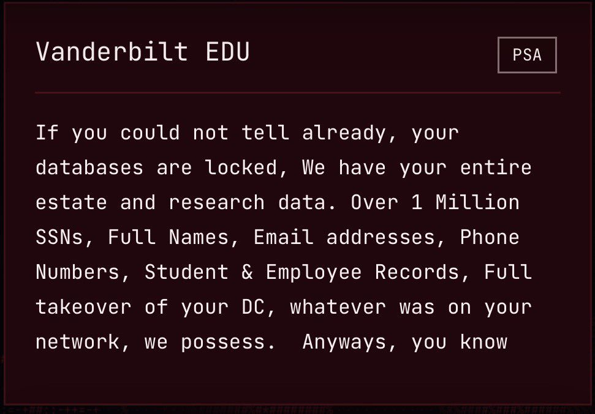
Innovation is driving the Super Intelligence era.
Today at G7, I emphasized how President Trump’s innovation-first approach is keeping American developers at the forefront of this technology, strengthening our prosperity and national security.
G7 countries have a shared interest in protecting frontier models against extraction and misuse.
We need industry-led partnerships, not more regulation and unnecessary red tape. The goal is security and opportunity for the American people and for our partners.
TRUMP: Does anybody really believe that this “Election” was honest. How could the Polls be so wrong??? Some early voting “dumps” were so large that it was impossible to win, no matter how many people went to vote. It’s all about the machines, which are far more important than the voter! President DJT
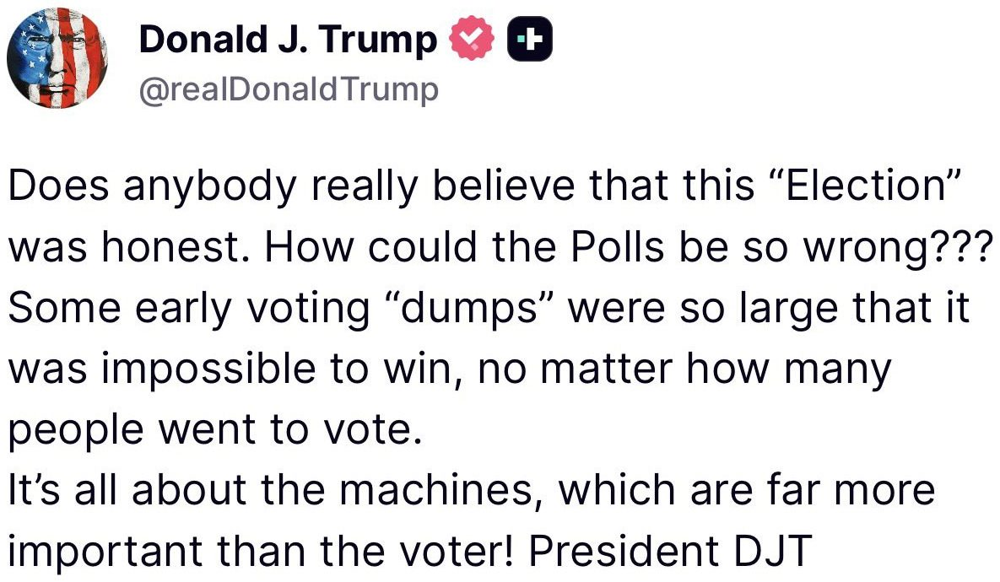
.@SECWAR “How did our war colleges drift from this clarity of purpose?
The answer is uncomfortable, but it must be identified candidly: Our military education system has become dangerously ‘civilianized.’”
BREAKING: UFC President Dana White takes questions from the White House Press Briefing Room.
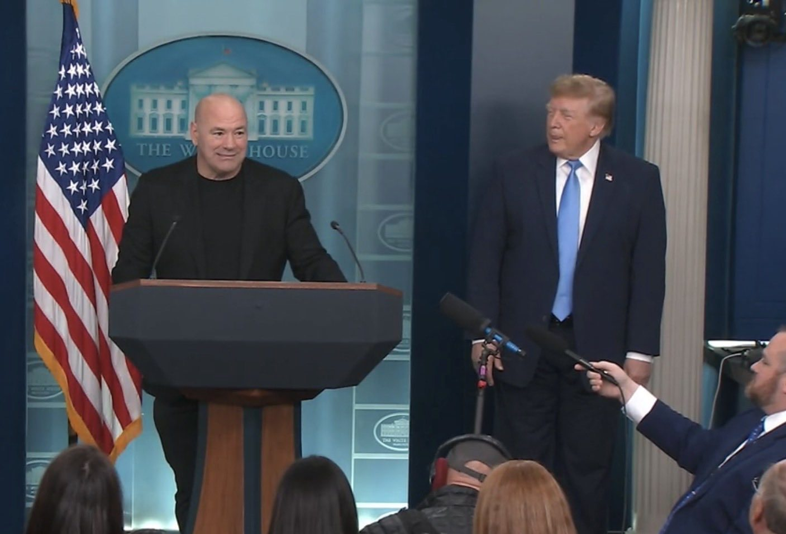
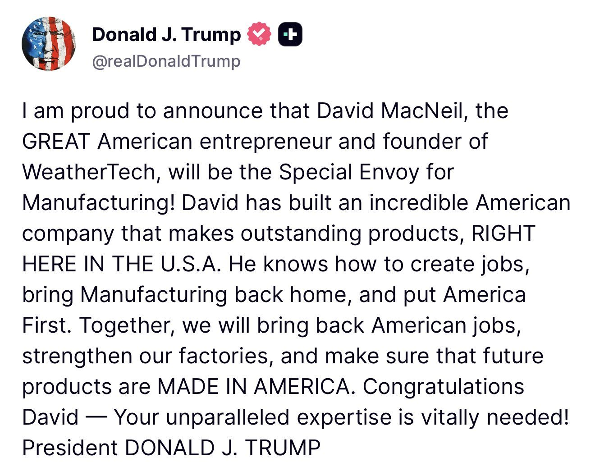
BREAKING: Gavin Newsom bans sales of certain "muscle-building supplements" to Californians under 18, potentially including whey protein & creatine.